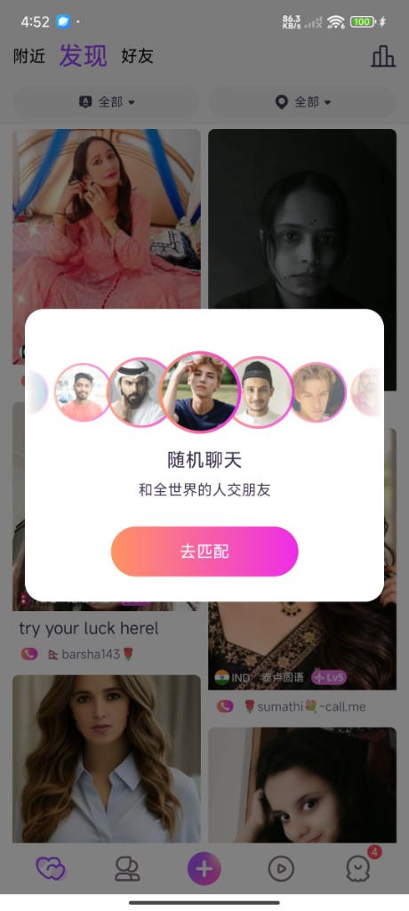

女坐等分析：核心问题与优化建议
一句话结论：50-女是坐等低效的核心问题人群，50-女坐等率14.67%，但仅5.04%有接到电话；95%的坐等女未接到，其10.19%的活跃女只坐等不开播，坐等收入仅占视频聊收入0.6%。建议引导50-女去直播，减少坐等入口曝光，把用户引导到更有价值的直播路径。
弹窗展示规则和页面截图
首页弹窗按历史赚取分档：50-女弹随机匹配，50–100女弹去直播，100+女不弹。
首页弹窗展示规则
| 女用户类型 | 弹窗类型 | 首次出现时机 | 弹窗间隔 | 每日限制 |
|---|---|---|---|---|
| 50-女 | 随机匹配 | 停留首页5秒后 | 5min | 最多5次 |
| 50-100女 | 去直播 | 停留首页5秒后 | 5min | 最多5次 |
| 100+女 | 无 | 无 | 无 | 无 |

一、核心结论
50-女问题最突出，断点在「没人打」，不是「不愿意接」。
01
进去多，但没人打
接到电话人数/坐等人数
5.04%
VS 100+女为 38.55%，50-女掉点在没人打，约95%的坐等女没有接到电话。
02
大量空坐，不开播
只坐等不开播人数/活跃女人数
10.19%
50-女约 4,548 人/日。50–100女 1.43%，100+女 1.54%。
03
坐等几乎不赚钱
50-女坐等赚取金豆/总视频聊金豆
0.6%
50-女坐等赚取 14.2 万金豆/日，其他视频聊拨打约坐等场景的 166 倍。
优化建议（优先级）
P0
50-女弹窗引导去直播随机匹配 → 去直播
P1
隐藏 50-女坐等入口隐藏坐等入口曝光，减少无效坐等
P2
分层治理，实验验证A/B测试，观察开播、接通与赚取
二、坐等全链路漏斗对比
人数漏斗：活跃女 → 坐等过 → 有来电 → 接通电话
活跃女人/日
坐等女活跃 → 坐等
有来电女坐等 → 来电
接通女来电 → 接通
活跃到接通率活跃 → 接通
50-女
问题最突出
44,656
14.67%
≈ 6,550人
5.04%
≈ 328人
83.25%
≈ 273人
0.61%
≈ 273人
50–100女
19,729
7.03%
≈ 1,387人
3.85%
≈ 53人
87.71%
≈ 47人
0.24%
≈ 47人
100+女
坐等有价值
103,352
4.38%
≈ 4,523人
38.55%
≈ 1,765人
96.10%
≈ 1,698人
1.64%
≈ 1,698人
三、坐等 vs 开播行为
只有 50-女坐等率高于开播率；且只坐等不开播人数占比最高。
坐等率 vs 开播率
只坐等不开播
4,548人/日
占50-活跃女10.19%
| 女用户分类 | 占比该层活跃女 | 人数/日 |
|---|---|---|
| 50-女 | 10.19% | 4,548 |
| 50–100女 | 1.43% | 282 |
| 100+女 | 1.54% | 1,591 |
结论：50-女是唯一「坐等率高于开播率」的群体，坐等14.67% > 开播12.67%，且50-女只坐等不开播占比10.19%最高，50-100女、100+女均明显以开播为主。
四、坐等价值对比
真正有价值的接通在 100+女。50-女坐等金豆只占其总视频聊金豆 0.6%。
接通人数与人均金豆
接通人数
接通人数人均金豆
人均金豆
50-女坐等女视频聊金豆结构
| 路径 | 金豆/日 | 占比总视频聊金豆 |
|---|---|---|
| 坐等接通 | 14.2 万 | 0.6% |
| 其他视频聊场景 | 2,369.7 万 | 99.4% |
结论：100+女人均坐等金豆约为50-女的27.6倍。50-女坐等几乎不贡献收入，其真正的视频聊收入来自其他场景，且约为坐等的166倍。
五、坐等女的来电分布
分母是坐等女。坐等来电 = receive_type=12；其他来电 = 除了坐等场景的电话。
四格结构（占该档坐等女）
结论：50-女坐等中，约一半当天两种来电都没有，是真正的空坐。只坐等来电仅 46 人（0.7%），坐等不是主要视频聊入口。
六、50-女按注册时间分层行为
（D1-7坐等最严重）
| 按注册时间分层 | 活跃女 | 坐等率 | 开播率 | 坐等到被打到 | 坐等接通率 | 只坐等不开播 |
|---|---|---|---|---|---|---|
| D0 注册当天 | 18,193 | 15.95% | 9.60% | 8.72% | 7.30% | 12.54% |
| D1-7 | 8,665 | 20.89% | 24.95% | 2.14% | 1.72% | 11.44% |
| D8+ | 17,798 | 10.36% | 9.85% | 2.11% | 1.74% | 7.22% |
D1-7坐等率最高达20.89%，但坐等→有来电仅2.14%；同时开播率已达24.95%。说明该阶段用户并非没有直播行为，核心矛盾更偏向坐等匹配效率不足。D8+ 仍有 1,844 人/日坐等，50-当天注册女的只坐等不开播占比最高12.54%，因此更值得尝试将坐等入口转向直播引导。
七、建议优化
优先引导 50-女去直播；全站入口暂不直接关闭，分层A/B实验后再决定是否进一步收缩。
阶段 1 · P0
引导去直播
50-女弹窗引导去直播。随机匹配 → 去直播，把用户引导到更有价值的直播路径。
阶段 2 · P1
隐藏坐等入口
隐藏 50-女坐等入口，降低曝光/门槛，减少无效坐等。
阶段 3 · P3
A/B测验证
分层 A/B测，看开播、接通、金豆变化，再决定是否进一步收缩全站坐等入口。